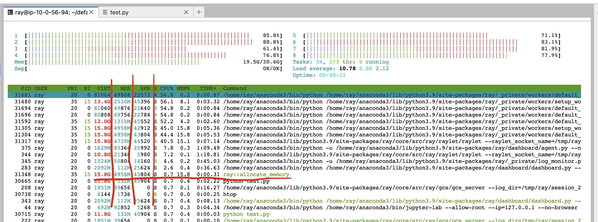
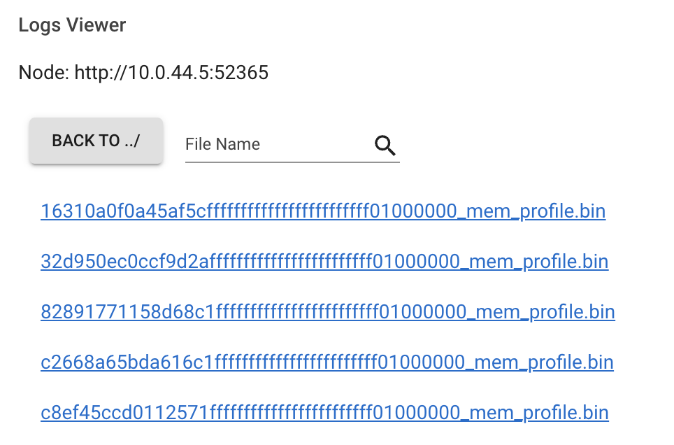

调试内存问题
Contents
调试内存问题#
调试 OOM#
在阅读本节之前，请先熟悉 Ray 内存管理 模型。
如果您的集群存在内存不足问题，请查看 如何检测内存不足错误。
要查找内存泄漏的来源，请查看 查找每个 Task 和 Actor 内存使用。
如果您的头节点内存使用率较高，请查看 Head Node Out-of-Memory Error。
如果您的内存使用率由于高并行度而较高，请查看 减少并行度。
如果您想要分析每个任务和 Actor 的内存使用情况，请查看 分析任务和 Actor 的内存使用情况。
什么是内存不足错误？#
内存是一种有限的资源。当进程请求内存而操作系统无法分配内存时，操作系统会执行一个例程，通过杀死内存使用率较高的进程（通过 SIGKILL）来释放内存， 以避免操作系统变得不稳定。该例程称为 Linux OOM killer 。
Linux 内存不足杀手的常见问题之一是 SIGKILL 在 Ray 没有注意到的情况下杀死进程。由于 SIGKILL 无法由进程处理，Ray 很难发出正确的错误消息并采取正确的容错措施。为了解决这个问题，Ray（从 Ray 2.2 开始）有一个应用程序级 内存监控器， 它持续监视主机的内存使用情况，并在 Linux 内存不足杀手执行之前杀死 Ray Workers。
检测内存不足错误#
如果 Linux 内存不足终止程序终止任务或 Actor，Ray Worker 进程将无法捕获并显示确切的根本原因，因为进程无法处理 SIGKILL。如果您从已死亡的工作线程执行的任务和 actor 调用 ray.get，它会引发异常并显示以下错误消息之一（这表明工作线程被意外终止）。
Worker exit type: UNEXPECTED_SY STEM_EXIT Worker exit detail: Worker unexpectedly exits with a connection error code 2. End of file. There are some potential root causes. (1) The process is killed by SIGKILL by OOM killer due to high memory usage. (2) ray stop --force is called. (3) The worker is crashed unexpectedly due to SIGSEGV or other unexpected errors.
Worker exit type: SYSTEM_ERROR Worker exit detail: The leased worker has unrecoverable failure. Worker is requested to be destroyed when it is returned.
您还可以使用 dmesg CLI 命令来验证进程是否被 Linux 内存不足杀手终止。

如果 Ray 的内存监视器杀死了该工作线程，则会自动重试（有关详细信息，请参阅 链接 ）。
如果任务或参与者无法重试，当您调用 ray.get 时，它们会引发异常并带有更清晰的错误消息
ray.exceptions.OutOfMemoryError: Task was killed due to the node running low on memory.
Task was killed due to the node running low on memory.
Memory on the node (IP: 10.0.62.231, ID: e5d953ef03e55e26f13973ea1b5a0fd0ecc729cd820bc89e4aa50451) where the task (task ID: 43534ce9375fa8e4cd0d0ec285d9974a6a95897401000000, name=allocate_memory, pid=11362, memory used=1.25GB) was running was 27.71GB / 28.80GB (0.962273), which exceeds the memory usage threshold of 0.95. Ray killed this worker (ID: 6f2ec5c8b0d5f5a66572859faf192d36743536c2e9702ea58084b037) because it was the most recently scheduled task; to see more information about memory usage on this node, use `ray logs raylet.out -ip 10.0.62.231`. To see the logs of the worker, use `ray logs worker-6f2ec5c8b0d5f5a66572859faf192d36743536c2e9702ea58084b037*out -ip 10.0.62.231.`
Top 10 memory users:
PID MEM(GB) COMMAND
410728 8.47 510953 7.19 ray::allocate_memory
610952 6.15 ray::allocate_memory
711164 3.63 ray::allocate_memory
811156 3.63 ray::allocate_memory
911362 1.25 ray::allocate_memory
107230 0.09 python test.py --num-tasks 2011327 0.08 /home/ray/anaconda3/bin/python /home/ray/anaconda3/lib/python3.9/site-packages/ray/dashboard/dashboa...
Refer to the documentation on how to address the out of memory issue: https://docs.ray.io/en/latest/ray-core/scheduling/ray-oom-prevention.html.
Ray 内存监视器还定期向 Ray 驱动程序打印聚合的内存不足杀手摘要。
(raylet) [2023-04-09 07:23:59,445 E 395 395] (raylet) node_manager.cc:3049: 10 Workers (tasks / actors) killed due to memory pressure (OOM), 0 Workers crashed due to other reasons at node (ID: e5d953ef03e55e26f13973ea1b5a0fd0ecc729cd820bc89e4aa50451, IP: 10.0.62.231) over the last time period. To see more information about the Workers killed on this node, use `ray logs raylet.out -ip 10.0.62.231`
(raylet)
(raylet) Refer to the documentation on how to address the out of memory issue: https://docs.ray.io/en/latest/ray-core/scheduling/ray-oom-prevention.html. Consider provisioning more memory on this node or reducing task parallelism by requesting more CPUs per task. To adjust the kill threshold, set the environment variable `RAY_memory_usage_threshold` when starting Ray. To disable worker killing, set the environment variable `RAY_memory_monitor_refresh_ms` to zero.
查找每个任务和 Actor 的内存使用情况#
如果任务或 actor 由于内存不足错误而失败，则会根据 重试策略 进行重试。 然而，通常更愿意找到内存问题的根本原因并修复它们，而不是依赖容错机制。 本节介绍如何调试 Ray 中的内存不足错误。
首先，找到内存使用率较高的任务和 actor 。查看 每个任务和参与者的内存使用情况图表 以了解更多详细信息。 每个组件图表的内存使用情况使用 RSS - SHR。推理见下文。
或者，您也可以使用 CLI 命令 htop 。
见 allocate_memory 行，查看两栏 RSS 和 SHR。
SHR 使用量通常是 Ray 对象存储中的内存使用量。 Ray 对象存储将 30% 的主机内存分配给共享内存 (/dev/shm，除非您指定 --object-store-memory) 。
如果 Ray 工作线程使用 ray.get 访问对象存储中的对象，则 SHR 使用量会增加。由于 Ray 对象存储支持 zero-copy
反序列化，因此多个 worker 可以访问同一个对象，而无需将它们复制到进程内内存。 例如，如果
个 worker 访问 Ray 对象存储中的同一对象，则每个进程的’ SHR 使用量都会增加。然而，他们没有使用 8 * SHR 内存两 (共享内存中只有 1 个副本)。
另请注意，当对象使用量超出限制时，Ray 对象存储会触发 对象溢出 ，这意味着共享内存的内存使用量不会超过主机内存的 30%。
主机内存不足问题是由于每个 worker 使用 RSS 造成的。 Calculate per
通过 RSS - SHR 计算每个进程的内存使用量，因为 SHR 用于 Ray 对象存储，如上所述。总内存使用量通常为
SHR (对象存储内存两, 30% 总内存量) + sum(RSS - 每个 ray proc SHR 用量) + sum(RSS - SHR 系统组件，如 raylet，GCS。通常很小)。
头节点内存不足错误#
首先，从指标页面检查头节点内存使用情况。从集群页面找到头节点地址。

然后从 指标试图 内的节点内存使用情况视图检查头节点的内存使用情况。

Ray 头节点具有更多对内存要求较高的系统组件，例如 GCS 或仪表板。
此外，驱动程序默认从头节点运行。如果头节点与工作节点具有相同的内存容量，并且从头节点执行相同数量的任务和Actor，则很容易出现内存不足的问题。
在这种情况下，通过启动头节点 ray start --head 指定 --num-cpus=0 来禁用在头节点上运行任何任务和 Actor 。 如果您使用 KubeRay，请查看 这里。
减少并行度#
memory capacity.
高并行性可能会触发内存不足错误。例如，如果您有 8 个训练 worker 执行数据预处理 -> 训练。
如果向每个工作线程加载太多数据，则总内存使用量 (training worker mem usage * 8) 可能会超出内存容量。
通过查看 每个任务和参与者的内存使用情况图 以及任务指标来验证内存使用情况。
首先，查看任务的内存使用情况 allocate_memory 。总计 18GB。
同时，验证正在运行的 15 个并发任务。
每个任务大约使用 18GB / 15 == 1.2 GB。减少并行度：
增加
ray.remote()的num_cpus选项。 现代硬件通常每个 CPU 具有 4GB 内存，因此您可以相应地选择 CPU 要求。 此示例为每个allocate_memory任务指定 1 个 CPU。
CPU 要求加倍，同时仅运行一半 (7) 的任务，并且内存使用量不超过 9GB。
分析任务和 Actor 内存使用情况#
任务和 actor 使用的内存也可能比您预期的要多。例如，actor 或任务可能存在内存泄漏或具有不必要的副本。
查看下面的说明，了解如何记忆单个 actor 和任务的概要信息。
内存分析 Ray 任务和 actor#
要分析 Ray task 或 actor 内存用量，使用 memray 。 请注意，您还可以使用其他支持类似 API 的内存分析工具。
首先安装 memray。
pip install memray
memray 支持 Python 上下文管理器以启用内存分析。您可以将 memray 分析文件写入任何您想要的位置。
但在本示例中，我们将写入 /tmp/ray/session_latest/logs 因为 Ray 仪表板允许您下载日志文件夹内的文件。这
将允许您从其他节点下载分析文件。
import memray
import ray
@ray.remote
class Actor:
def __init__(self):
# Every memory allocation after `__enter__` method will be tracked.
memray.Tracker(
"/tmp/ray/session_latest/logs/"
f"{ray.get_runtime_context().get_actor_id()}_mem_profile.bin"
).__enter__()
self.arr = [bytearray(b"1" * 1000000)]
def append(self):
self.arr.append(bytearray(b"1" * 1000000))
a = Actor.remote()
ray.get(a.append.remote())
请注意，任务的生命周期较短，因此可能会有大量内存分析文件。
import memray # noqa
import ray # noqa
@ray.remote
def task():
with memray.Tracker(
"/tmp/ray/session_latest/logs/"
f"{ray.get_runtime_context().get_task_id()}_mem_profile.bin"
):
arr = bytearray(b"1" * 1000000) # noqa
ray.get(task.remote())
任务或 actor 运行后，转到仪表板的 日志。找到并单击日志文件名。
点击下载按钮。

现在，您已经有了内存分析文件。执行
memray flamegraph <memory profiling bin file>
您可以看到内存分析的结果！